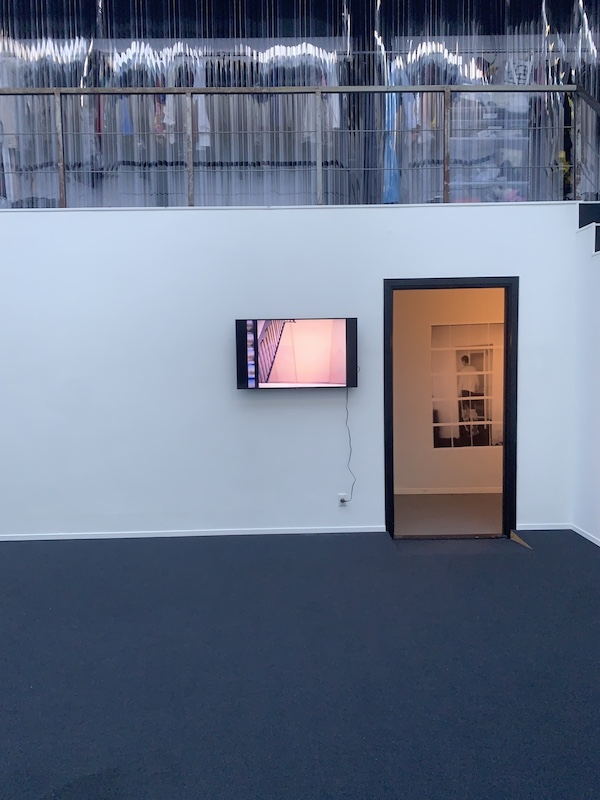

 Keyworks at Red Tracy 2022.
Keyworks at Red Tracy 2022.
Through doors becoming the walls
20 inkjet prints on A4 on wall and 04:51 min video with sound.
Following the exhibition Keywork with the video 'Unless useless' opening one week prior at bbberlin.
The photographs that constitutes the video are taken in the fire exit staircase and basement of the same
housing building as Unless Useless. Each photo can be distributed and sold as unique inkjet posters
with added doodles by Vera. Together the posters creates a puzzle and a shared whole between shareholders.
walkthrough video documentation